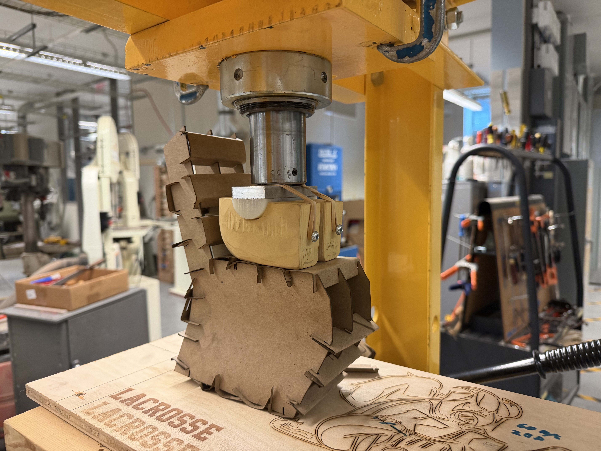
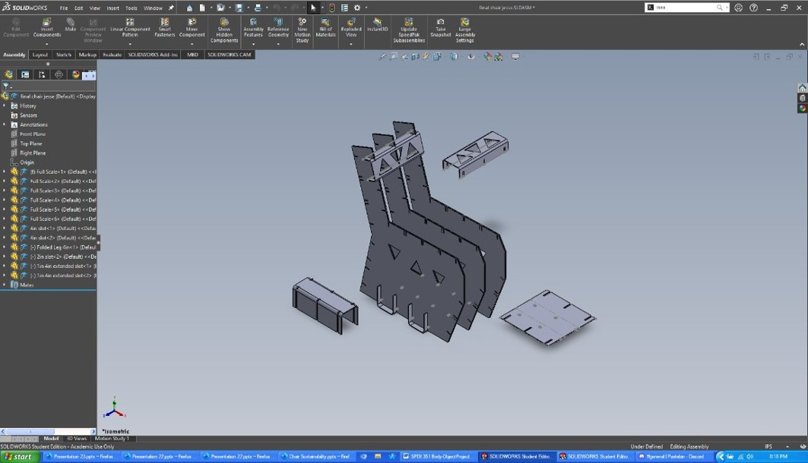
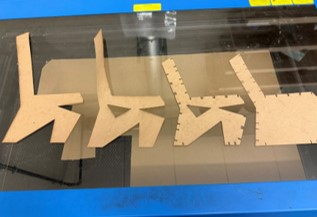
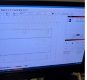
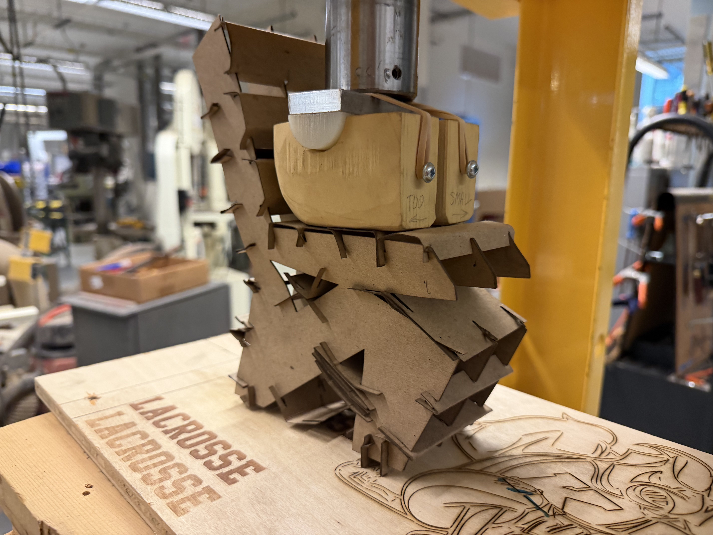
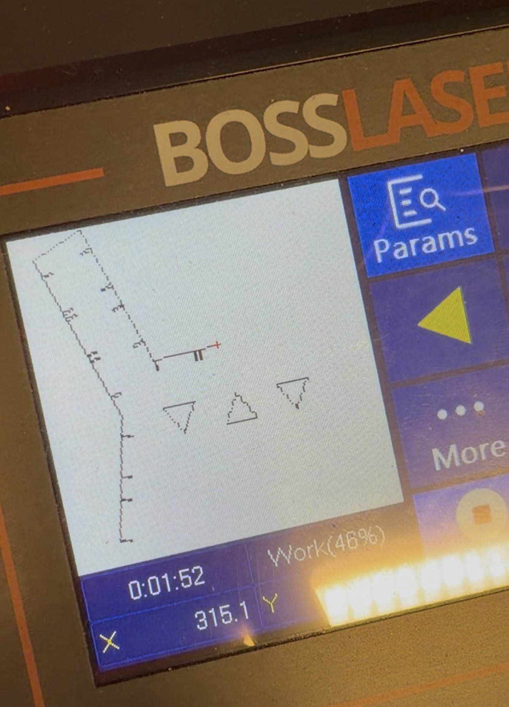
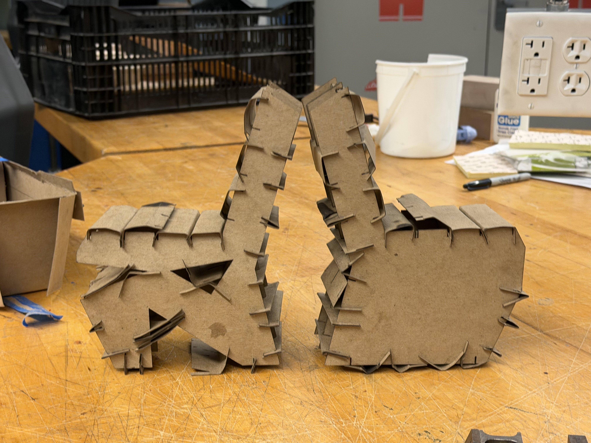
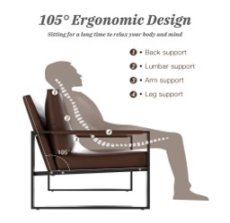
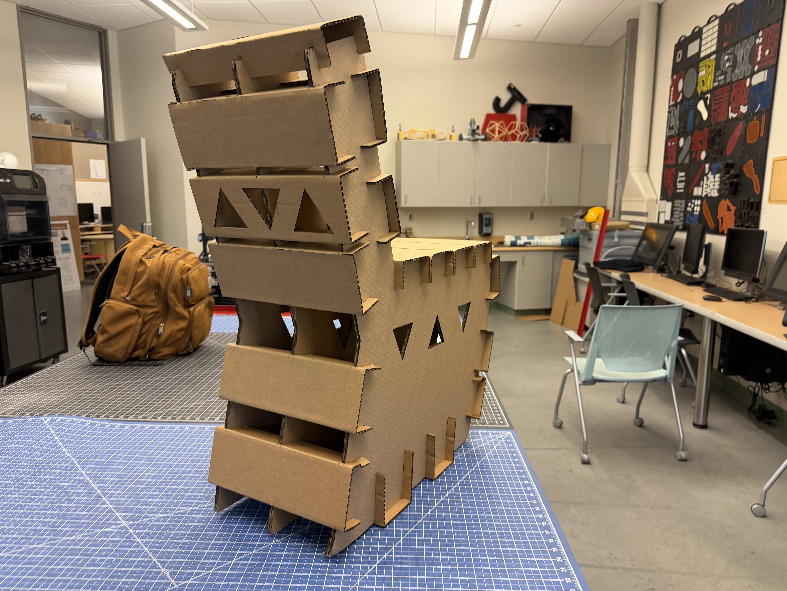
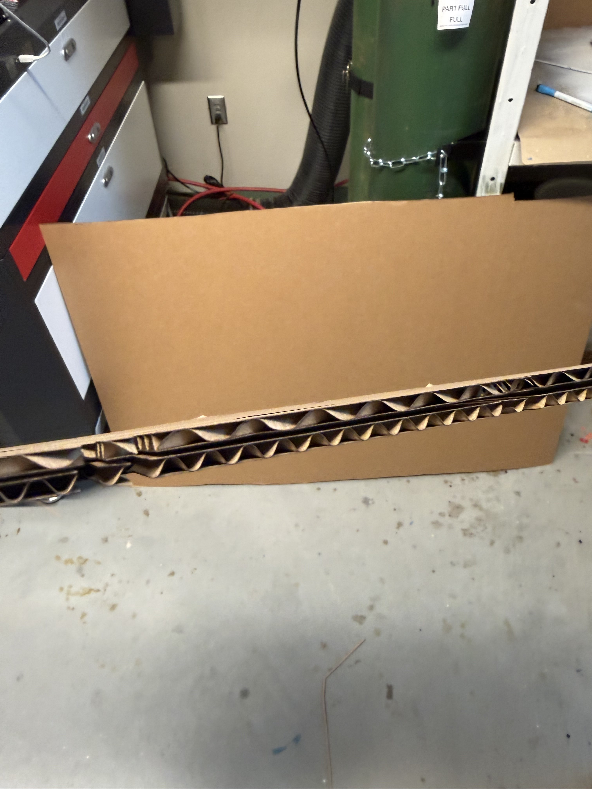

Cardboard Chair Project
The Problem
We began this project by conducting a suitability analysis of an existing chair on the market. We were then tasked with developing prototyping and constructing a more sustainable design. This project was all about working within constraints and design limitations. The end goal was to produce a chair that could support the average human’s bodyweight for extended periods of time while also taking ergonomic factors and comfort into account. We were not permitted to use any fasteners or adhesives within our designs, and our material choice was limited to a maximum of 1.5 sheets of the corrugated cardboard provided.

The Process
After the completion of our sustainability analysis, we entered the ideation phase where several concept sketches were created. After selecting a final design, I developed a scale prototype using SOLIDWORKS and the ULS Laser system. This prototype was then tested on a custom hydraulic press unit designed to simulate human interaction with the chair at a 1/4th scale. After several phases of testing and alteration and a basic statics analysis I was able to nearly double the chairs, load carrying capacity. Once the testing was completed and I had a design capable of supporting the required full-scale loads. I was able to use the SOLIDWORKS Equation functions to scale up my 1/4th scale design to human scale while accounting for the thickness difference between our prototype chipboard and the full-size corrugated cardboard. This also meant no additional modifications were needed for the press fit components and slots of the chair. The transition to the full-size chair was as simple as changing two numbers! For the manufacturing of the full-scale design, I switched to the BOSS laser system for its larger work area and faster speeds.
The Results
The result was a chair held together without any fasteners or adhesives that was able to support significantly higher loads than my body weight (In fact, I could fully stand on top of it without issue). The “Grain” or in this case the corrugation of the vertical cardboard supports was angled to maximize strength in both the horizontal and vertical planes reducing wobble while increasing stability. I took inspiration from the keystones of bridges meaning when higher loads are applied to the chair the connections between the various press fit components became tighter allowing for increased strength. The design also met all sustainability requirements using only a fraction of the cardboard coming in under a single sheet of raw material usage.


